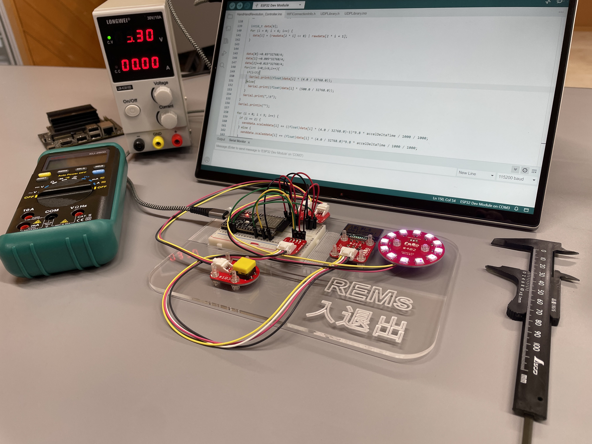
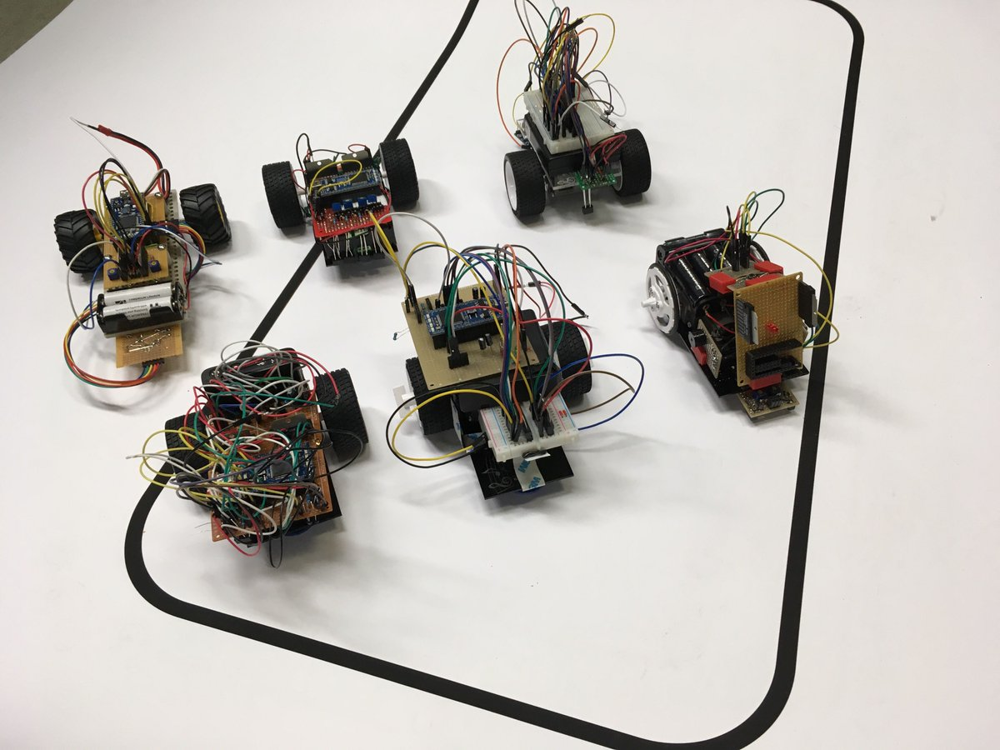
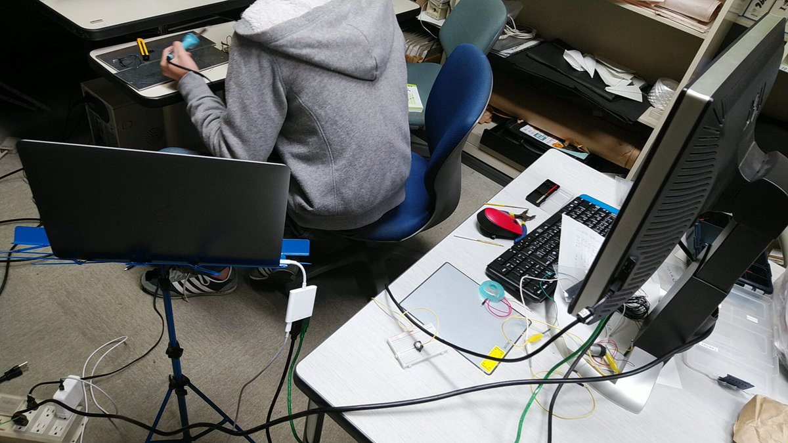
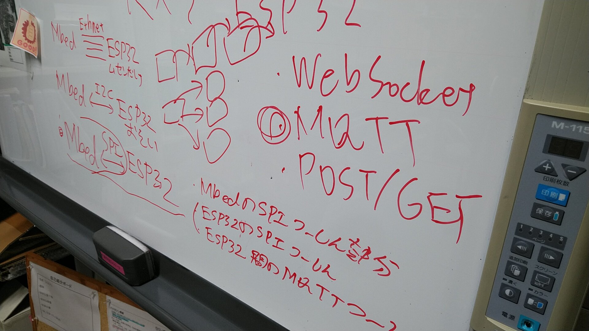
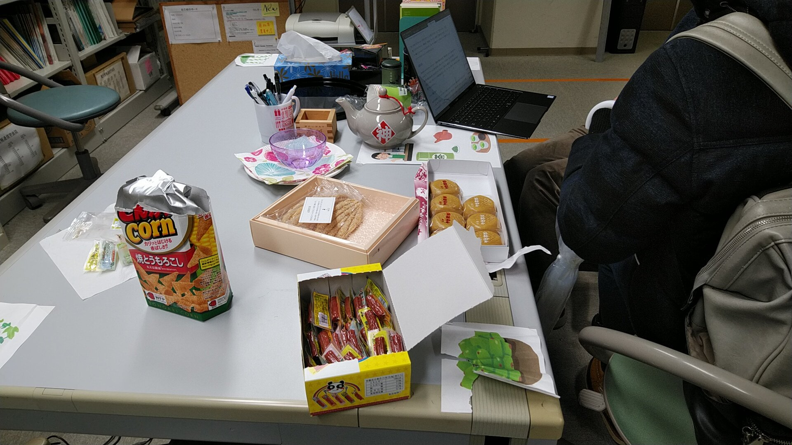

Lチカから、ロボットまで。
∨
∨
∨
サークル紹介
REMs(れむず)とは
会津大学でIoTやロボットなどのハードウェア関連の制作をするサークルです。
創立 : 2017年 11月 13日
部員数 : 23名(2024/3/29現在)
部員数 : 23名(2024/3/29現在)
部長から
こんにちは。部長のＷａＲａです。部内でプロジェクトを立てて、皆さんがロボコンと聞いて最初に想像するようなメカメカしいロボットをつくったり、マイクロマウスに出るようなちっちゃくてかわいいものをつくったり、多種多様なロボットを造っていきます。また、ＥＴロボコンのような、ハードウェアではなくアルゴリズムを考えることを重視した大会に参加したりしています。
活動内容
初心者向け勉強会
初心者向けにラジコン制作をする勉強会が5月から開催されます!
勉強会を通してボディ設計や電子回路、プログラムを学びます。
初心者も大歓迎です! 講義資料が完備されているので、無理なく進められます。
勉強会を通してボディ設計や電子回路、プログラムを学びます。
初心者も大歓迎です! 講義資料が完備されているので、無理なく進められます。

作品の制作
勉強会終了後には、学園祭やMakerFaireなどのイベントに向けて実際に作品の制作を行っていきます。
開発内容は自由で、便利なIoT機器や迷路探索ロボット、ハードウェアを用いたゲームなど様々なモノがアイデアしだいで制作できます!
制作した作品は4月や9月などに開催されるMakerFaireというイベントに展示する予定です。
開発内容は自由で、便利なIoT機器や迷路探索ロボット、ハードウェアを用いたゲームなど様々なモノがアイデアしだいで制作できます!
制作した作品は4月や9月などに開催されるMakerFaireというイベントに展示する予定です。

部のスローガン
みんなでハードウェアを楽しむ

興味を持った？
活動場所
-
厚生棟3階K1 部室
食堂を出てすぐの螺旋階段を3階まで上がった所 -
研究棟1階 AizuGeekDojo
研究棟の中央エレベーター1階のすぐ横にあります
部室見学
4月期間中は、部室見学を実施しています。
部室で過去の作品を見たり、先輩とお話しすることができます!
開催日時: 以下の日時の間ならいつでも見学できます!
部室で過去の作品を見たり、先輩とお話しすることができます!
開催日時: 以下の日時の間ならいつでも見学できます!
- 4月3日(水)、4日(木)、5日(金)
12:30～17:00 - 4月10日(水)、12日(金)、17日(水)
17:10～20:00 - 上記以外の時間も不定期で開放します。詳しくはXで告知します!
サークル説明会
サークル説明会では活動内容や設備、活動予定、その他諸々を詳しくお話しします。
過去の作品の発表も行うので、入部を検討している方はぜひ来てください!
開催場所: AizuGeekDojo
開催日時: 以下の二日開催 30分程度を予定(発表内容は同一です)
過去の作品の発表も行うので、入部を検討している方はぜひ来てください!
開催場所: AizuGeekDojo
開催日時: 以下の二日開催 30分程度を予定(発表内容は同一です)
- 4月15日(月) 17:10開始
- 4月19日(金) 17:10開始
入部に関して
その他
5月以降や上記以外の時間に見学をしたい方は、事前にXのアカウントやメールなどで連絡をいただければ、部室の開放や日程調整など何かしらの対応をします!
分からないこと、相談したいこと等がある場合でも、連絡歓迎しています!
分からないこと、相談したいこと等がある場合でも、連絡歓迎しています!

お問い合わせ
以下の連絡先からお願いします。
会津大学関係者の方へ: メールで連絡する際は極力学内のアドレスから送ってください。
メールアドレス: rems.uoa@gmail.com
X(旧Twitter) ID: ⓐAizuRobo